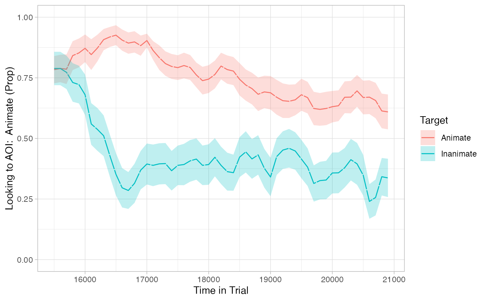
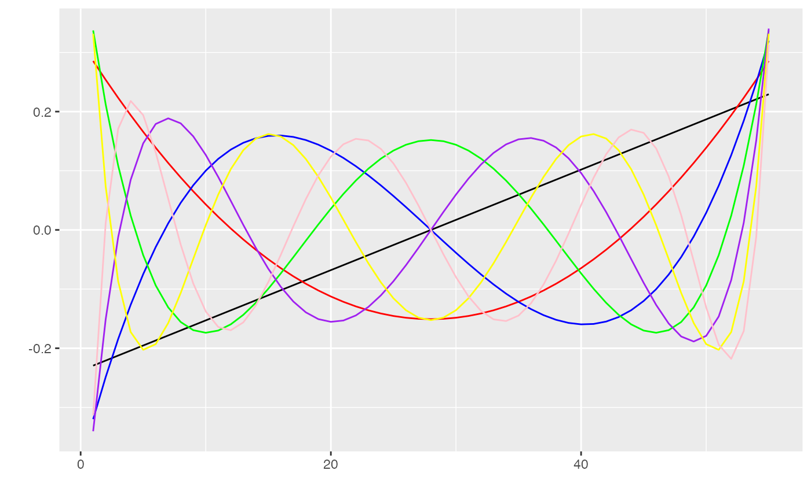
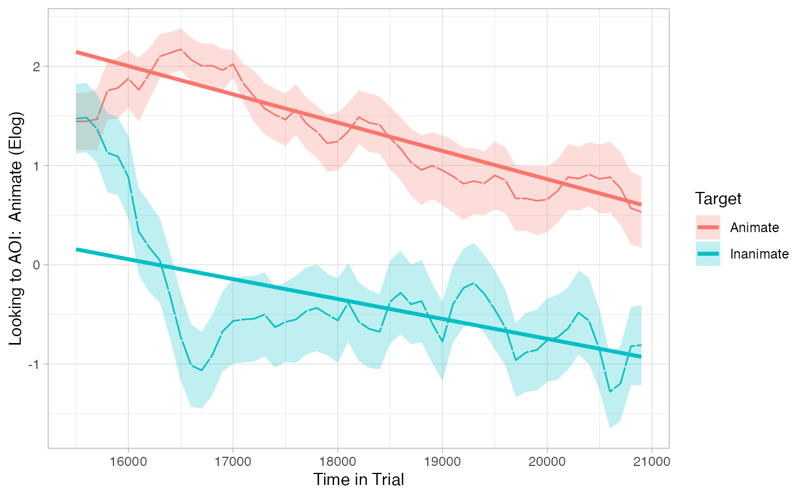
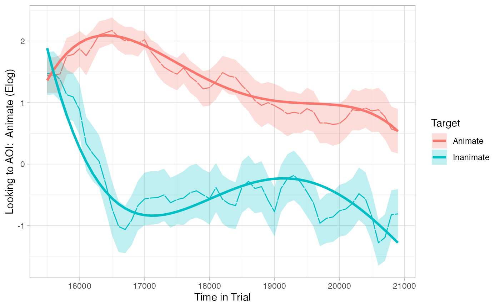

vignettes/growth_curve_analysis_vignette.Rmd
growth_curve_analysis_vignette.RmdOur Experiment: Each eyetrackingR vignette uses the eyetrackingR package to analyze real data from a simple 2-alternative forced choice (2AFC) word recognition task administered to 19- and 24-month-olds. On each trial, infants were shown a picture of an animate object (e.g., a horse) and an inanimate object (e.g., a spoon). After inspecting the images, they disappeared and they heard a label referring to one of them (e.g., “The horse is nearby!”). Finally, the objects re-appeared on the screen and they were prompted to look at the target (e.g., “Look at the horse!”).
In this vignette, we want to examine our data without throwing out time as a predictor. That is, we want to ask how are differences (if any) between the Target conditions emerged over time in each trial. To do so, we will perform a growth curve analysis.
Before performing this analysis, we’ll need to prepare and clean our dataset. Here we will to do this quickly and with few notes but, for more information, see the vignette on preparing your data.
## Loading required package: dplyr##
## Attaching package: 'dplyr'## The following objects are masked from 'package:stats':
##
## filter, lag## The following objects are masked from 'package:base':
##
## intersect, setdiff, setequal, union
data("word_recognition")
data <- make_eyetrackingr_data(word_recognition,
participant_column = "ParticipantName",
trial_column = "Trial",
time_column = "TimeFromTrialOnset",
trackloss_column = "TrackLoss",
aoi_columns = c('Animate','Inanimate'),
treat_non_aoi_looks_as_missing = TRUE
)
# subset to response window post word-onset
response_window <- subset_by_window(data,
window_start_time = 15500,
window_end_time = 21000,
rezero = FALSE)## Avg. window length in new data will be 5500
# analyze amount of trackloss by subjects and trials
(trackloss <- trackloss_analysis(data = response_window))
# remove trials with > 25% of trackloss
response_window_clean <- clean_by_trackloss(data = response_window, trial_prop_thresh = .25)## Performing Trackloss Analysis...## Will exclude trials whose trackloss proportion is greater than : 0.25## ...removed 33 trials.In this analysis, we are interested in the change of our data over time. Therefore, it’s very important that we visualize our data to see whether our statistical estimates make any sense at all.
To plot the time-course of our data, we first need to convert it to eyetrackingR’s time_sequence_data format, which summarizes the data into time-bins and calculates proportion-looking for each (here we use 100ms time bins). From there, we simply use the plot method to plot the time-course.
# aggregate across trials within subjects in time analysis
response_time <- make_time_sequence_data(response_window_clean, time_bin_size = 100,
predictor_columns = c("Target"),
aois = "Animate"
)
# visualize time results
plot(response_time, predictor_column = "Target") +
theme_light() +
coord_cartesian(ylim = c(0,1))
From this plot, we should expect to see some big differences between Target conditions over time. However, an ideal analysis will also be consistent with the observation that these differences emerged after ~500ms – i.e, they were not present at window onset.
Growth curve analysis (GCA) lets us model the timecourse of attention by fitting curves to proportion-looking over the course of the trial, and statistically assessing the bends in these curves. Our implementation of a growth curve analysis modelled after Mirman et al. (2008).
eyetrackingR sets us up nicely for GCA. Above, we used make_time_sequence_data to generate the dataframe. This dataframe includes everything we need for GCA.
First, it includes the same dependent variable columns as make_time_window_data, giving us an option of analyzing raw proportions or its transformations (for more detail, see the documentation or the window analysis vignette ).
Prop – the mean of raw proportion scoresLogitAdjusted – the logit transformation, log( Prop / (1-Prop) ), adjusted to avoid -/+ infinityElog – the empirical logit transformation log( Prop+e / (1-Prop+e) )
ArcSin – the arcsine-root transformationSecond, time_sequence_data has a series columns corresponding to ‘orthogonal polynomial timecodes.’ You can think of these as the linear, quadratic, cubic, etc. component of our Time predictor (so Time, Time^2, Time^3, etc.). However, unlike simply taking the power, these transformations are uncorrelated with each other, and therefore more appropriate for multiple regression.
If this seems confusing, it might help to simply visualize each of these vectors:
# generate dataframe summarizing values of each vector
timecodes <- unique(response_time[, c('ot1','ot2','ot3','ot4','ot5','ot6','ot7')])
timecodes$num <- 1:nrow(timecodes)
ggplot(timecodes, aes(x=num, y=ot1)) +
geom_line() +
geom_line(aes(y=ot2), color='red') + # quadratic
geom_line(aes(y=ot3), color='blue') + # cubic
geom_line(aes(y=ot4), color='green') + # quartic
geom_line(aes(y=ot5), color='purple') + # quintic
geom_line(aes(y=ot6), color='yellow') + # sextic
geom_line(aes(y=ot7), color='pink') + # septic
scale_x_continuous(name="") +
scale_y_continuous(name="")
## ot1 ot2 ot3 ot4 ot5 ot6 ot7
## ot1 1 0 0 0 0 0 0
## ot2 0 1 0 0 0 0 0
## ot3 0 0 1 0 0 0 0
## ot4 0 0 0 1 0 0 0
## ot5 0 0 0 0 1 0 0
## ot6 0 0 0 0 0 1 0
## ot7 0 0 0 0 0 0 1You can see the linear time code moving from the bottom left to top right corner of that plot (in black). Each of the other coloured lines corresponds to a different growth function.
The idea behind GCA is that we can simulanteously regress differences between our conditions (here, Target) on each of these to see which (in combination, or independently) best captures the pattern of growth in our data. Importantly, because they are uncorrelated, they are sure to capture distinct variance in our data.
Let’s fit our first GCA model, including only the linear time code for now (i.e., we temporarily want to ignore non-linear change over time):
# sum-code and center our predictor:
response_time$TargetC <- ifelse(response_time$Target == 'Animate', .5, -.5)
response_time$TargetC <- as.numeric(scale(response_time$TargetC, center=TRUE, scale=FALSE))
# Construct model
model_time_sequence <- lmer(Elog ~ TargetC*(ot1) + (1 + ot1 | Trial) + (1 + ot1 | ParticipantName),
data = response_time, REML = FALSE)
# cleanly show important parts of model (see `summary()` for more)
broom.mixed::tidy(model_time_sequence, effects = "fixed")## # A tibble: 4 × 5
## effect term estimate std.error statistic
## <chr> <chr> <dbl> <dbl> <dbl>
## 1 fixed (Intercept) 0.740 0.142 5.21
## 2 fixed TargetC 1.76 0.139 12.7
## 3 fixed ot1 -3.00 0.634 -4.73
## 4 fixed TargetC:ot1 -0.995 0.732 -1.36
drop1(model_time_sequence, ~., test="Chi")## Single term deletions
##
## Model:
## Elog ~ TargetC * (ot1) + (1 + ot1 | Trial) + (1 + ot1 | ParticipantName)
## npar AIC LRT Pr(Chi)
## <none> 28106
## TargetC 1 28123 19.4738 1.02e-05 ***
## ot1 1 28118 14.0063 0.0001822 ***
## TargetC:ot1 1 28105 1.6244 0.2024827
## ---
## Signif. codes: 0 '***' 0.001 '**' 0.01 '*' 0.05 '.' 0.1 ' ' 1eyetrackingR includes a plot method for time_sequence_data that can easily overlay the predictions of this model on the raw data:
plot(response_time, predictor_column = "Target", dv = "Elog", model = model_time_sequence) +
theme_light()
This model reveals two main effects of TargetC and ot1, respectively. These may seem OK at first, but they are actually not a great match to our data (as revealed by the plot of their predictions).
But what we are missing is a result that reflects that these differences between Target emerged after the start of the window.
To remedy this issue, we can allow for non-linear change overtime by including a few higher-order orthogonal polynomials:
model_time_sequence <- lmer(Elog ~ TargetC*(ot1 + ot2 + ot3 + ot4) + (1 | Trial) + (1 | ParticipantName),
data = response_time, REML = FALSE)
# commented out because this many random slopes takes too long to fit for a vignette
# model_time_sequence <- lmer(Elog ~ TargetC*(ot1 + ot2 + ot3 + ot4) +
# (1 + ot1 + ot2 + ot3 + ot4 | Trial) + (1 + ot1 + ot2 + ot3 + ot4 | ParticipantName),
# data = response_time, REML = FALSE)
# cleanly show important parts of model (see `summary()` for more)
broom.mixed::tidy(model_time_sequence, effects = "fixed")## # A tibble: 10 × 5
## effect term estimate std.error statistic
## <chr> <chr> <dbl> <dbl> <dbl>
## 1 fixed (Intercept) 0.734 0.143 5.13
## 2 fixed TargetC 1.76 0.138 12.7
## 3 fixed ot1 -2.82 0.193 -14.6
## 4 fixed ot2 0.319 0.193 1.65
## 5 fixed ot3 -0.584 0.193 -3.03
## 6 fixed ot4 -0.325 0.192 -1.69
## 7 fixed TargetC:ot1 -0.790 0.401 -1.97
## 8 fixed TargetC:ot2 -1.74 0.402 -4.34
## 9 fixed TargetC:ot3 4.22 0.401 10.5
## 10 fixed TargetC:ot4 -1.82 0.400 -4.54
drop1(model_time_sequence, ~., test="Chi")## Single term deletions
##
## Model:
## Elog ~ TargetC * (ot1 + ot2 + ot3 + ot4) + (1 | Trial) + (1 |
## ParticipantName)
## npar AIC LRT Pr(Chi)
## <none> 28096
## TargetC 1 28114 19.327 1.101e-05 ***
## ot1 1 28305 210.511 < 2.2e-16 ***
## ot2 1 28097 2.721 0.099027 .
## ot3 1 28104 9.184 0.002442 **
## ot4 1 28097 2.851 0.091310 .
## TargetC:ot1 1 28098 3.870 0.049159 *
## TargetC:ot2 1 28113 18.804 1.449e-05 ***
## TargetC:ot3 1 28204 109.693 < 2.2e-16 ***
## TargetC:ot4 1 28115 20.595 5.674e-06 ***
## ---
## Signif. codes: 0 '***' 0.001 '**' 0.01 '*' 0.05 '.' 0.1 ' ' 1
plot(response_time, predictor_column = "Target", dv = "Elog", model = model_time_sequence) +
theme_light()
This model better captures our data because it shows critical interactions between Target and higher-order polynomials. These allow the model to capture the steep drop in the Inanimate condition as well as the bend that follows it.
GCA can tell you that your conditions/predictors had some predictive value (i.e., changed differently) over time. They can also tell you the form of that change by seeing the polynomials with which they reliably interacted. However, they can’t tell you at what time these predictors had an effect.
In the case of ascertaining reaction times, one way to answer this question is by using onset-contingent analyses.
For more general approaches to estimating time windows of divergence (estimating both the onset and offset of divergences), take a look at the divergence vignette.
Mirman, D., Dixon, J., & Magnuson, J. S. (2008). Statistical and computational models of the visual world paradigm: Growth curves and individual differences. Journal of Memory and Language, 59, 474–494. https://doi.org/10.1016/j.jml.2007.11.006.